1. Einführung und Ziele
1.1. Aufgabenstellung
Der Frankfurter Flughafen hat kürzlich festgestellt, dass er aufgrund häufiger Wetteränderungen auf einigen Landebahnen einen Engpass aufweist. Um eine Lösung zu finden, müssen sie zunächst wissen, welche Szenarien die schlimmsten Engpässe verursachen. Deshalb haben sie sich für einen Simulator entschieden, in dem sie mehrere Szenarien konfigurieren und analysieren, und hoffen, dass sie dadurch hervorgehoben werden, wo das eigentliche Problem liegt.
Was ist FlightSimulator eigentlich?
- FlightSimulator ist ein Software, die eine Lösung für das oben genannte Problem ist.
- Es dient sowohl als leicht zugängliche, als auch als attraktive Fallstudie zum Entwurf, zur Bewertung und Dokumentation von Softwarearchitekturen.
- Die Software wurde entwickelt, um erweiterbar zu sein, und ihre verständliche Struktur lädt Entwickler zum Experimentieren und Erweitern des Softwares ein.
- Die Komplexität des Codes ist nicht sehr hoch, weil es nur ein Prototyp ist.
Wichtige Eigenschaften
- Aus Sicht der späteren Nutzung ist es wichtig um ein erweitbares Program zu entwickeln. Dafür sind sowohl Abstrakte Klassen als auch ein Factory benutzt. Das Ziel ist das Program so zu modellieren, um Firmas mit dem vorhandenen Code ein einfaches UI/View programmieren können und damit sie das System auch verwenden können.
1.2. Qualitätsziele
Wir haben begonnen, an dem Konzept zu arbeiten, und nachdem wir alle Schichten der Software analysiert hatten, haben wir einige Designentscheidungen getroffen:
| Qualitätsziel | Motivation / Beschreibung |
|---|---|
| Gerätekompatibilität | Da die Software auf einer Vielzahl von Betriebssystemen in einer sehr strengen Unternehmensumgebung ausgeführt werden soll, entschiedeten wir uns für die Verwendung einer klassischen OOP-Sprache: Java. |
| Erweitbarkeit | Die mit Java benutzte Abstraktion zielt darauf ab, die Details der Implementierung nicht zu berücksichtigen und daraus ein allgemeines Schema zur Lösung des Problems abzuleiten. So haben wir uns entschieden um ein Factory zu erstellen, damit wir mehrere Typen von Luftfahrzeuge erstellen können. Wieso ist es wichtig? Man kann das Factory verwendend das Program leicht weiterentwickeln und mehrere Funktionalitäten hinzufügen. |
| Logische und klare Modellierung | Da FlightSimulator nur ein Prototyp für Unternehmen ist, um ein Simulator anhand ihren Präferenzen zu implementieren, ist es wichtig die Software so gut und lesbar zu modellieren wie möglich. |
| Frontend-Kompatibilität | Das Program ist kompatibel mit einer anpassbaren Benutzeroberfläche. Die JavaFx Benutzeroberfläche wurde nur für Demozwecke erstellt, aber man kann aus mehrere UI Varianten wählen. |
1.3. Stakeholder
| Rolle | Kontakt | Erwartungshaltung |
|---|---|---|
Flughafen Frankfurt am Main |
+ 49 180 6372 4636 |
|
Academia Forţelor Aeriene Henri Coandă (Universität Rumänien) |
0268 423 421 |
|
Studenten & Lehrer |
- |
|
2. Randbedingungen
2.1. Technische
| Randbedingung | Motivation / Beschreibung |
|---|---|
| Moderate Hardwareausstattung | Um FlightSimulator zu benutzen braucht man entweder ein PC oder Laptop. Aber wenn man ein entsprechendes UI dafür baut, dann kann man das Program auch auf ein Handy benutzen. |
| Betriebssysteme | Java ist platformunabhängig. Man kann das Program auf jedes Betriebsystem ausführen. |
| Implementierung in Java | Das Program ist in Java 7 entwickelt, aber es sollte auch auf neue Java Versionen funtionieren. |
| Implementierung mit Fremdsoftware | Wenn es sich um ein Third-Party Software geht (z. B. ein grafisches Frontend), kann man FlightSimulator ohne Probleme benutzen und als System implementieren. |
2.2. Organisatorische
| Randbedingung | Beschreibung |
|---|---|
| Team | Lorand Istenes, Teodor Filipescu, Alexandru Tenie, Dorin Iliescu und Otto Fischer |
| Zeitplan | Entwicklung des Codes bis 18.-ten Mai. Dokumentierung des Projektes ab 19.-ten Mai bis 24.-sten Mai. |
| Entwicklungswerkzeuge | Die Quellcode wurde in IntelliJ geschrieben mit Hilfe von JavaFX und andere moderne Technologien. |
| Konfigurations- und Versionsverwaltung | Die Quelltexte der Lösung ist Open Source und die erste Version ist auf Github zu finden. |
| Testwerkzeuge und -prozesse | Die Teste waren in JUnit 4 gebildet und erfolgreich ausgeführt. |
2.3. Konventionen
| Randbedingung | Beschreibung |
|---|---|
| Architekturdokumentation | Terminologie und Gliederung nach dem deutschen arc42-Template in HTML |
| Sprache (Deutsch | Die Dokumentation wurde auf Deutsch geschrieben aber die Quelltexte sind auf English. Das heißt, dass die Klassen und Variabel-name auf English sind. Aufgrund der englischen Sprache, kann man das System so überall der Welt implementieren. |
| Kodierrichtlinien für Java | Geprüft mit IntelliJ plugins und manuelles Testen. |
3. Kontextabgrenzung
3.1. Fachlicher Kontext
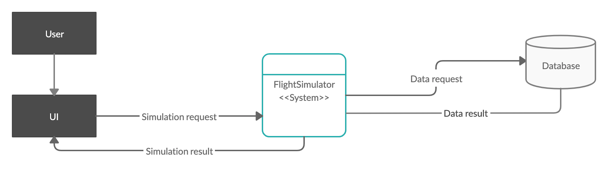Actor
Um das FlightSimulator zu starten braucht man ein Benutzer (Actor). Dieser soll das User Interface benutzen um eine Simulation durchzuführen. Er macht eine Anfrage (Request) mit einer Taste zu unserem System. Wenn diese Anfrage gemacht wurde, macht das System eine andere Anfrage zu unsere Datenbank (screnario.txt). Die Datenbank gibt die verfügbare Luftfahrzeuge zurück. Das System macht dann die Simulation und liefert die Ergebnisse zurück zu den Benutzer.
User Interface (Fremdsystem)
Das User Interface ist die Verbindung zwischen dem Benutzer und System. Hier kann man die Simulationen starten und die Ergebnisse anschauen und analysieren. Das Projekt hat schon eine erstellte JavaFX UI (für Demo Zwecke nur), aber man kann das System mit anderen UIs auch implementieren.
FlightSimulator System
Hier werden die Luftfahrzeugobjekte erstellt und ihre Verhalten simuliert. Jeder Luftfahrzeugetyp hat ein unterschiedliches Verhalten in schlechte Wetterbedingungen und die Ergebnisse werden anhand dieses Verhalten generiert.
Datenbank (Fremdsystem)
Die Datenbank ist für die Speicherung der verfügbaren Flugzeuge verantwortlich. Unser Datenbank ist momentan nur ein Textdatei, aber man kann das Program leicht mit Mysql oder SQL Server auch verbinden.
3.2. Technischer Kontext
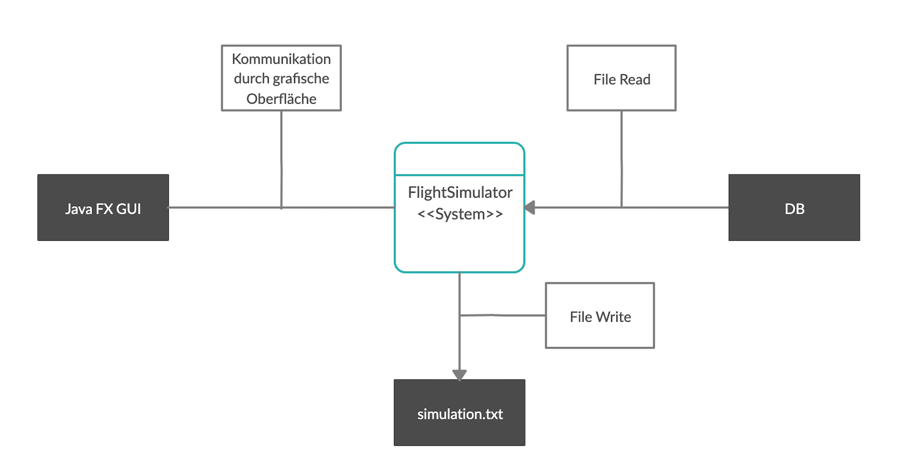UI
Die “Anbindung” des Benutzers erfolgt über ein grafisches Frontend. In unserem Fall, haben wir ein JavaFX Frontend, aber das Program kann immer mit einem anderen UI verbindet werden.
Datenbank
Die Datenbank ist ein TextDatei und der Zugriff erfolgt ausschließlich lesend.
4. Lösungsstrategie
4.1 Einleitung
In der folgenden Tabelle werden die Qualitätsziele von FlightSimulator (→ Abschnitt 1.2) mit passenden Architekturansätzen verglichen und somit ein einfacher Zugriff auf die Lösung bereitgestellt werden.
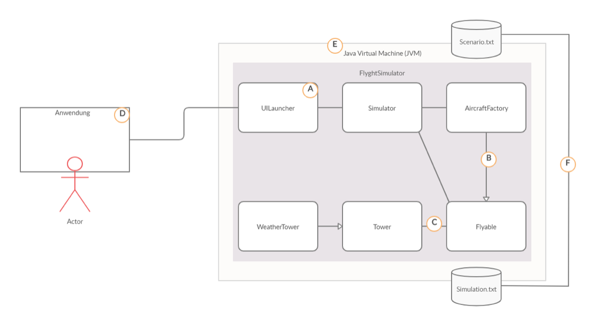| Qualitätsziel | Dem zuträgliche Ansätze in der Architektur |
|---|---|
| Gerätekompatibilität | Die Anwendung verwendet JVM (E), das auf verschiedenen Betriebssystemen installiert werden kann. Z.B. Windows,Linux,Mac OS X (macOS), Andorid,IoT devices,Web etc. |
| Erweitbarkeit | Die Anwendung verwendet zwei Design Patterns(B),(C), um sich der Erweiterbarkeit zu nähern: Factory- und Observer-Pattern |
| Loghische und klare Modellierung | Die Modellierung der Anwendung wurde unter Berücksichtigung der " loose coupling " durchgeführt. Die App behält die SOLID-Prinzipien der OOP-Programmierung bei. |
| Frontend-Kompatibilität | Für die Demo verwendet die App das JFX-Framework für die Interaktion mit dem Benutzer (D) und als I/O 2 -Dateien (F). |
4.2 Struktur von Flight Simulator
FlightSimulator ist ein Java-Programm mit Observer Pattern und Facotry Pattern implementiert. Es ist in folgende Teile unterteilt:
- Eine AircraftFactory-Klasse, die jedes Objekt erstellt
- Eine WeatherTower-Klasse, die jedes Objekt mit Wetterdaten informiert
- Die Verbindung zu einer grafischen Benutzeroberfläche über das Java-FX Framework
- Speichern der Verlauf im „.txt“ Format
Diese Zerlegung ermöglicht es Ihnen, Dinge wie das Wetterprotokoll oder der Flugtyp bei Bedarf zu ersetzen. Alle Teile werden über Schnittstellen abstrahiert. Ihre Implementierungen werden über „Dependency Injection“ zusammengestellt (→ 5. Bausteinansicht, → 8.1 Abhängigkeiten zwischen Modulen). Durch die Zerlegung kann die Software automatisch getestet werden. (→ 8.7 Testbarkeit).
4.3 FightSimulator Strategie
| JetPlane | Helicopter | Baloon |
|---|---|---|
| SONNE - Der Breitengrad nimmt mit 10 zu, die Höhe mit 2 | SONNE - Die Längengrad nimmt mit 10 zu, die Höhe mit 2 | SONNE - Die Längengrad nimmt mit 2 zu, die Höhe mit 4 |
| REGEN - Der Breitengrad nimmt mit 5 zu | REGEN - Die Längengradnimmt mit 5 zu | REGEN - Die Höhe nimmt mit 5 ab |
| NEBEL - Der Breitengrad nimmt mit 1 zu | NEBEL - Die Längengrad nimmt mit 1 zu | NEBEL - Die Höhe nimmt mit 3 ab |
| SCHNEE - Die Höhe nimmt mit 7 ab | SCHNEE - Die Höhe nimmt mit 12 ab | SCHNEE - Die Höhe nimmt mit 15 ab |
- Koordinaten sind positive Zahlen.
- Die Höhe liegt im Bereich von 0 bis 100.
- Wenn ein Flugzeug die obere Grenzhöhe überschreiten muss, bleibt es bei 100.
- Jedes Mal, wenn ein Flugzeug erstellt wird, erhält es eine eindeutige ID. Es können nicht 2 Flugzeuge mit derselben ID vorhanden sein.
- Wenn ein Flugzeug die Höhe 0 erreicht oder darunter gehen muss, landet das Flugzeug, hebt die Registrierung vom Wetterturm ab und protokolliert seine aktuellen Koordinaten.
- Wenn sich das Wetter ändert, muss jeder Flugzeugtyp eine Nachricht protokollieren.
- Jedes Mal, wenn sich ein Flugzeug zum / vom Wetterturm registriert oder abmeldet, wird eine Nachricht protokolliert.
4.4 Eingabe- und Ausgabedaten
FlightSimulator verwendet eine grafische Benutzeroberfläche, die Daten aus einer ".txt" -Datei mit dem Namen "Scenario.txt" abruft.
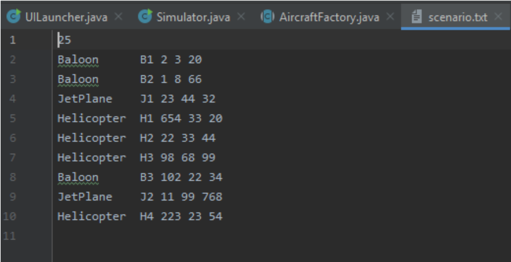Die Ausgabe wird in einer lokalen ".txt" -Datei mit dem Namen "simulations.txt" gespeichert und zeigt das Ergebnis im Fenster an.
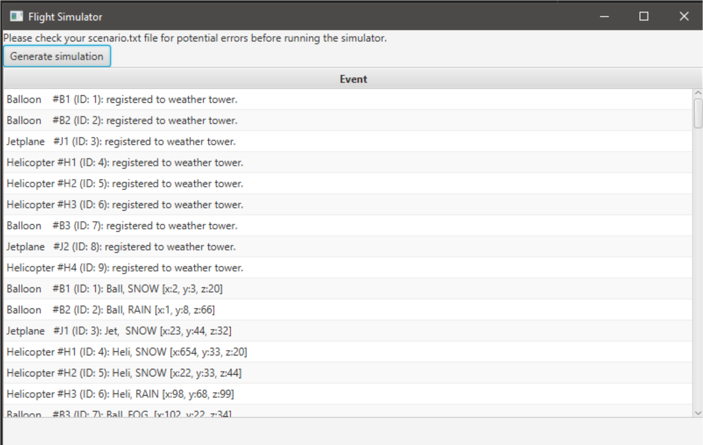
Der eigentliche FlyghtSimulator WatchTower wird durch einen reaktiven Ansatz („Reactive Extensions“) angehängt (→ 6.1 Laufzeitansicht „Exemplarische erweiterte zur Simulation“). Auf diese Weise werden alle Flugzeugpositionen synchron geändert.
Unter Windows erfolgt die Integration von FlyghtSimulator in eine Benutzeroberfläche mit einer exe-Datei (* .exe), die mit JFX Framework erstellt wurde. Es startet die Java Virtual Machine (JVM) mit der Klasse mit der Hauptmethode als Parameter (→ 7. 7. Deployment View).
5. Bausteinsicht
5.1. Ebene 1
FlightSimulator gliedert sich in drei Subsysteme, wie unten dargestellt. Die gestrichelten Pfeile stellen logische Abhängigkeiten zwischen den Subsystemen dar ("x -> y" für "x hängt von y ab"). Die quadratischen Kästchen auf der Membran des Systems sind Interaktionspunkte („Ports“) mit der Außenwelt (→ 3.2 Bereitstellungskontext).
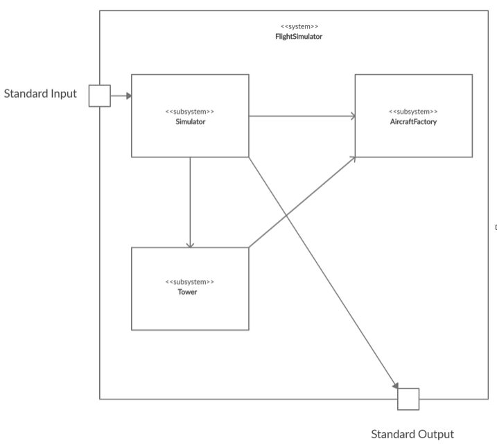| Subsystem | Kurze Beschreibung |
|---|---|
| Simulator | Realisiert die Kommunikation mit einem Client über JFX und sendet die Logik an die anderen Komponenten |
| AircraftFactory | Erstellt das spezifische Flyable-Modell (Flugzeugmodell) mit den als Eingabe angegebenen Parametern |
| Tower | Erstellt das spezifische Turm-Modell (z. B. Wetterturm) mit den als Eingabe angegebenen Parametern |
5.2 Subsystem Simulator (BlackBox)
Absicht / Verantwortung
Dieses Subsystem implementiert die Kommunikation mit einem Client (z. B. einer grafischen Benutzeroberfläche) unter Verwendung des JFX (→ Entscheidung V.9.1). Es liest Befehle von der Standardeingabe, vergleicht sie mit den Validatoren und leitet sie an die AircraftFactory weiter. Antworten von der AircraftFactory (insbesondere den Modellen) werden vom Subsystem als Ereignisse akzeptiert, gemäß dem Protokoll formatiert und über die Standardausgabe zurückgegeben. Somit steuert das Subsystem die gesamte Simulation.
Schnittstelle
The subsystem provides its functionality via the Java class javafx.stage.Stage;
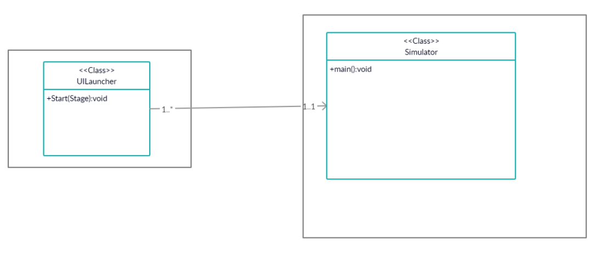Dateien
Die Implementierung befindet sich unter den Paketen org.flightSim
Offene Punkte
Die Implementierung des JFX ist unvollständig. Trotzdem reicht es für die Anforderungen von FlightSimulator aus.
5.3 Subsystem AircraftFactory(BlackBox)
Absicht / Verantwortung
Dieses Subsystem berücksichtigt die Erstellung der Flugzeugmodelle.
Schnittstelle
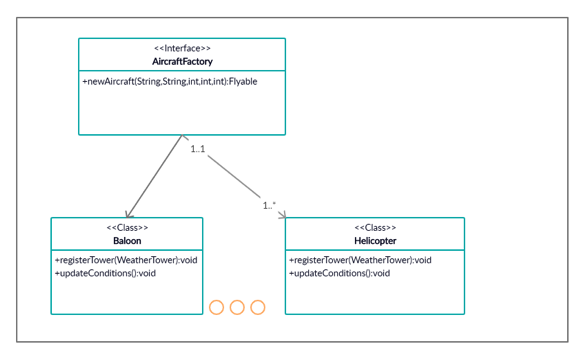| Methode | Kurze Beschreibung |
|---|---|
| newAircraft | Sendet die Parameter an den spezifischen Klassenkonstruktor |
Dateien
Die Implementierung befindet sich unter den Paketen org.flightSim
Offene Punkte
Die Implementierung des JFX ist unvollständig. Trotzdem reicht es für die Anforderungen von FlightSimulator aus.
5.4 Subsystem Tower (BlackBox)
Absicht / Verantwortung
Dieses Subsystem berücksichtigt die Erstellung der Turmmodelle und benachrichtigt die Flugzeuge über die geänderten Bedingungen.
Schnittstelle
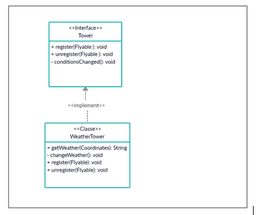| Methode | Kurze Beschreibung |
|---|---|
| register | Registrieren Sie ein Flugzeug zum Turm |
| unregister | ein Flugzeug vom Turm abmelden |
| conditionsChanged | Benachrichtigen Sie die Flugzeuge über die geänderten Bedingungen |
Dateien
Die Implementierung befindet sich unter den Paketen org.flightSim
Offene Punkte
Die Implementierung des JFX ist unvollständig. Trotzdem reicht es für die Anforderungen von FlightSimulator aus.
5.5 Kommunikation zwischen dem Turm und Flugzeugtypen (Whitebox)
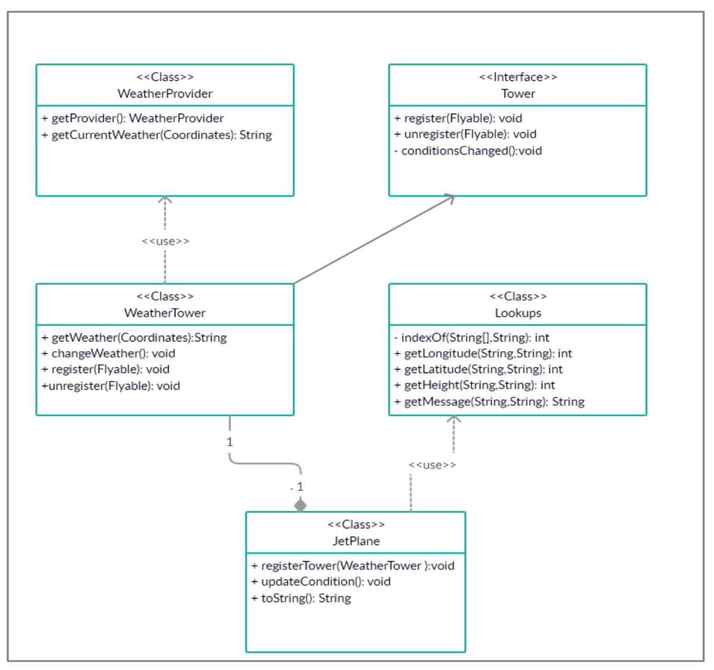| Methode | Kurze Beschreibung |
|---|---|
| Lookups | Rufen Sie die Koordinaten jedes Flugzeugs ab und erhalten Sie die Nachricht mit den Informationen über den Flugzeugtyp und das Wetter dort |
| WeatherProvider | Bietet die Informationen mit der richtigen Wettervorhersage |
Dateien
Die Implementierung befindet sich unter den Paketen org.flightSim
Offene Punkte
Die Implementierung des JFX ist unvollständig. Trotzdem reicht es für die Anforderungen von FlightSimulator aus.
6. Laufzeitsicht
Der Simulator validiert die Eingabe (→ Konzept 8.4 „Plausibilitätsprüfungen und -validierung“) und erstellt die Flugzeuge. Dann wird jedes Flugzeug dem Wetterturm abonniert. Die Bewegungen werden wetterabhängig durchgeführt. Bei der Landung meldet sich das Flugzeug vom Wetterturm ab.
Das Beispieldiagramm zeigt die Erstellung jedes Flugzeugs und eine Bewegung. Am Ende der Schritte wird das Ergebnis im Fenster gedruckt und in der Ausgabedatei gespeichert.
7. Verteilungssicht
In diesem Projekt haben wir ein sehr einfaches Deployment view. Es besteht aus einem einzigen Node, welches das PC/Laptop des Benutzers ist. Es enthält ein Artifact, die Runnable Datei, also den UI Launcher Datei. Jede Betriebsystem, worauf Java installiert wurde, kann das Program ausführen.
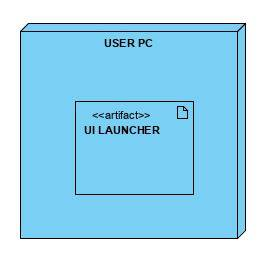Software Requirements on a PC:
- Java Runtime Environment SE 7 (or higher)
- The JVM (javaw.exe) is in the PATH
- Arena
8. Querschnittliche Konzepte
8.1. Abhängigkeiten zwischen Modulen
In unserem Projekt kann man 3D Punkte (Koordinaten) generieren. Zwischen diese Punkte und die Klasse Aircraft existiert eine Komposition, weil Aircrafte als Atribute Koordinaten haben. Mit Hilfe von Aircraft Factory können wir 3 Typen (Balloon, Helicopter, Jetplane) von Luftfahrzeuge zu generieren. Diese Luftfahrzeuge erweitern die Klasse Aircraft, und implementieren das Interface Flyable, also bekommen sie ein ID, eine Name, Koordinaten und sie können zu ein Weather Tower registrieren. Man kann Aggregation zwischen der Klasse Tower und Flyable bemerken, es hat als Attribut eine Liste von Typ Flyable und zwei Methoden register, unregister. Weather Tower erweitert die Klasse Tower, überschreibt ihre Methoden und bekommt ein Weather Typ von WeatherProvider Klasse.
8.2. Domänenmodell
Koordinaten - longitude, latitude, height
Aircraft Factory -Helicopter, Jetpane, Balloon
Weather Provider – sun, rain, fog, snow
Unsere Koordinaten sind Punkte 3D, also sie haben 3 int Attributen welches die longitude, latitude, and height definieren.
Weather Provider hat eine Liste von Strings, es kann 4 Wetter Typen (sun, rain, fog, snow) enthalten.
Aircraft Factory kann 3 Typen von Aircraften generieren: Helicopter, Jetpane, Balloon.
In der Klasse Lookups, kann man verschiedne Koordinaten geben, für jedes Weather-Aircraft Paar.
8.3. Benutzungsoberfläche
Wir haben unser Projekt mit einem JavaFX User Interface verbindet. Mit der Verwendung von JavaFx, haben wir die zurücklieferte Ergebnisse angezeigt. Verschiedene Benutzern können jetzt die Applikation leicht verwenden. JavaFX wurde, wie schon oben genannt, nur für Demo Zwecke benutzt, aber das Program kann auch mit andere UIs verbindet werden. (z.B JSP, Java Servlet und viele Andere)
8.4. Plausibilisierung und Validierung
Die erste und die wichtigste Validierung ist die input Datei(scenario.txt), man muss sicherstellen, dass diese Datei existiert, und das Program es erfolgreich öffnen kann. Davon bekommen wir alle wichtige Informationen um das Program korrekt abzulaufen. Ein sehr wichtiges Element ist die Nummer der Simulationen, dieses muss größer als 0 sein. Dass soll auch das erste Element der Datei sein.
8.5. Ausnahme- und Fehlerbehandlung
Um die begangenen Fehler zu behandeln, haben wir Exceptions benutzt. Wenn das Program die Input Datei nicht korrekt lesen kann, ein Fehlernachricht (“error:could not read file”) wird auf dem Bildschirm angezeigt. Falls dass die Nummer der Simulationen, kleiner als Null ist, oder nicht das erste Element von der Input Datei ist, erscheinen zwei andere Nachrichten “Number of simulations must be grater than 0” und “error: first line of input should be number of simulations “. Falls in der Input Datei, ein nicht bekanntes Aircraft ist, dann wird die Nachricht “Invalid aircraft Type angezeigt.
8.6. Testbarkeit
Um sicher zu stellen, dass unser Projekt korrekt funktioniert, haben wir Teste geschrieben. Wir verwenden JUnit Testen, das ein Framework fürs Testen von Java Programmen ist. Es ist besonders für automatisierte Unit-Tests geeignet. In dem Projekt, wir haben zwei Teste ausgeführt, eine für das Lesen aus der Input Datei und eine andere für Lesen aus der Output Datei. Beide Teste waren nach der Ausführung erfolgreich.
9. Entwurfsentscheidungen
ADR-Java FX
Java FX ist ein Framework zur Erstellung plattformübergreifender Java-Applikationen. Es ist ein Java Specification von Oracle und setzt sich zum Ziel, das professionelle Erstellen von interaktiven Inhalten und grafische Benutzeroberflächen über sämtliche Java-Plattformen hinweg zu erleichtern.
Wir haben in unserem Projekt Java FX benutzt, deswegen erreichten wir ein besseres Aussehen, und jetzt alle Users können die Applikation benutzen. Sie sollen auf der ,,Generate simulation” Taste klicken und das Program wird ausgeführt. Die Ergebnisse der Simulationen finden sie auf dem Bildschirm.
ADR-Fabrik methode
Fabrikmethode bezeichnet ein Entwurfsmuster aus dem Bereich der Softwareentwicklung. Das Muster beschreibt, wie ein Objekt durch Aufruf einer Methode anstatt durch direkten Aufruf eines Konstruktors erzeugt wird.
Fabrikmethoden entkoppeln ihre Aufrufer von Implementierungen konkreter Produkt-Klassen, also wird für die Instanzierung kein new Operator in der aufrufenden Klasse verwendet.
So kann man zu einem späteren Zeitpunkt Instanzen anderer Klassen erzeugt werden, ohne dass sich die Applikation ändern muss.
ADR-Textdatei als Datenbank
Eine Textdatei wurde als Datenbank benutzt. Wir haben diese Entscheidung getroffen, weil es einfach zu implementieren ist und das Set-Up hat weniger gedauert, aber genauso wie beim UI, kann man das System mit andere Varianten verbinden, wie z.B. mit einer MySQL oder SQL Server Datenbank.
10. Qualitätsanforderungen
10.2. Qualitätsszenarien
| Nr. | Szenario |
|---|---|
| 1. | Ein interessierter Kunde mit Uml-Kenntnissen und Grundkenntnissen über Flugzeuge und Wetter möchte mit dem FlightSim-Programm beginnen. Strategie und Design werden in 10 Minuten enthüllt. |
| 2. | Ein erfahrener Java-Entwickler versucht, ein im Entwurf beschriebenes Modul zu implementieren. Er findet den Quellcode sehr leicht. |
| 3. | Ein Architekt, der arc42 verwenden möchte, sucht nach einem Beispiel für einen bestimmten Inhalt für ein Kapitel der Vorlage und findet es sofort in der Dokumentation. |
| 4. | Ein Entwickler implementiert eine neue grafische Oberfläche für die Anwendung, wobei die bereits vorhandenen Komponenten sehr einfach in die neue Oberfläche integriert werden können, ohne dass Änderungen am vorhandenen Code vorgenommen werden müssen. Genauso leicht kann man das Program mit einer anderen Datenbank auch verbinden. |
| 5. | Ein Entwickler implementiert einen neuen Flugzeugtyp. Der Aufwand für dieses Update beträgt maximal 30 Minuten. |
| 6. | Während der Simulation wird das Verhalten der Objekte instant verändert und das Ergebnis wird in wenige Sekunden zurückliefert. Wenn die Datenbank mehrere Objekte enthaltet, wird der Zeit der Ausführung steigen, aber nicht exponentiell. |
| 7. | Nach dem Beginn des Programms antwortet die Anwendung auf die Anfrage des Benutzers ziemlich schnell. Das bedeutet, dass die Ergebnisse der Anfrage innerhalb wenigen Sekunden zurückgeliefert werden. Das Ergebnis der Ausführung wird visuell ausgewertet, um verwaltet zu werden. |
| 8. | Der Simulator wird zu Beginn der Simulation mit einem Satz falscher Koordinaten angezeigt. Während der Generierung wird eine Warnung in Bezug auf dieses Flugzeug ausgelöst. Die Anwendung lässt dieses Flugzeug für die aktuelle Simulation weg, ohne in die folgenden Simulationen einzugreifen. |
| 9. | Ein Benutzer möchte FlightSimulator mit einem Front-End verwenden, das ein von der Lösung implementiertes Kommunikationsprotokoll unterstützt. Die Integration erfordert keinen Programmieraufwand, die Konfiguration im Frontend erfolgt in 10 Minuten und wird getestet. |
| 10. | In einer gleichzeitigen Situation ändert sich das Flugzeug unter Berücksichtigung seiner aktuellen Koordinaten und Wetterbedingungen. |
11. Risiken und technische Schulden
Risiko: Frontend-Verbindung
Die Anwendung verfügt über ein Frontend, aber jeder Benutzer kann ein von ihm erstelltes Frontend hinzufügen.
Wenn es nicht möglich ist, eine funktionale Lösung zu implementieren, kann die Anwendung nur mit dem anfänglichen Frontend verwendet werden.
Notfallplanung
Die anfängliche Benutzeroberfläche wird verwendet, um mit dem Flugsimulationsprogramm zu interagieren, bis die Probleme mit dem Frontend des Kunden gelöst sind.
Risikominderung
Vor der Verwendung des Programms sollte seine Schnittstelle getestet werden, um die Funktionalität der Anwendung sicherzustellen.
Risiko: Ungültige Daten in der Eingabedatei
Die Anwendung verfügt über eine Eingabedatei, in die die Anzahl der Simulationen eingegeben wird, und in den folgenden Zeilen das Flugzeug zusammen mit seinen Koordinaten. Wenn diese Datei falsche Koordinaten enthält, werden diese Flugzeuge nicht erzeugt und ihre Verhalten nicht simuliert. Wenn die Anzahl der Simulationen jedoch nicht gültig ist, funktioniert die Anwendung nicht.
Notfallplanung
Wenn keine gültige Eingabedatei vorhanden ist, muss sie bearbeitet werden, um sie gültig zu machen. Eine andere Möglichkeit besteht darin, die Eingabedatei zu löschen und eine Datei mit demselben Namen, aber gültigen Daten zu erstellen.
Risikominderung
Bevor Sie die Anwendung verwenden, wird empfohlen, die Eingabedatei zu überprüfen. Das System wurde auf dem Prinzip der Effienz gebaut und das Program sollte auch auf alte Geräte auch funktionieren.
12. Glossar
| Begriff | Definition |
|---|---|
| Benutzer, Nutzer, Kunde | Diejenige die die Anwendung verwenden und die Simulation über die grafische Oberfläche durchführen. |
| UI | User Inteface. In unserem Fall Java FX. |
| DB | Datenbank. In unserem Fall scenario.txt |
Balloon, Helicopter, Jetplane |
Flugzeugtype |
| Turm | Der Turm registriert die vorhandenen Flugzeugtypen und registriert dessen Verhalten. |
SUN, RAIN, FOG, SNOW |
Die verfügbare Wetterbendingungen für die Simulation |
Landing |
Das Flugzeug ist erfolgreich gelandet. |
Koordinaten |
Koordinaten sind positive Zahlen. Die Höhe liegt im Bereich von 0-100. Wenn ein Flugzeug die obere Grenzhöhe überschreiten muss, bleibt es bei 100. |
| Simulation | Die Veränderung des Verhaltens anhand der Wetterbedingungen. |